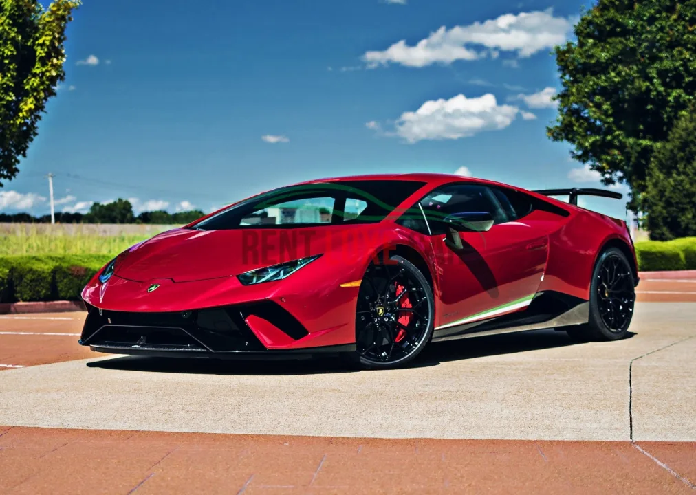

Włoska marka supersamochodów

Obraz przedstawia jeden z samochodów Lamborghini.
Lamborghini to włoska marka luksusowych supersamochodów. Została założona przez Ferruccio Lamborghiniego, który początkowo produkował traktory. Samochody Lamborghini są bardzo szybkie i drogie.